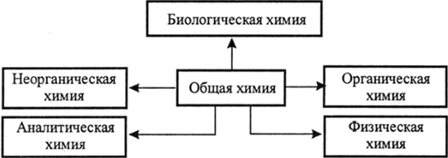

- Домой

Современная химия — настолько обширная область естествознания, что многие её разделы по существу представляют собой самостоятельные, хотя и тесно взаимосвязанные научные дисциплины.
По признаку изучаемых объектов (веществ) химию принято делить на неорганическую и органическую. Объяснением сущности химических явлений и установлением их общих закономерностей на основе физических принципов и экспериментальных данных занимается физическая химия, включающая квантовую химию, электрохимию, химическую термодинамику, химическую кинетику. Самостоятельными разделами являются также аналитическая и коллоидная химия (см. ниже перечень разделов).
Технологические основы современных производств излагает химическая технология — наука об экономичных методах и средствах промышленной химической переработки готовых природных материалов и искусственного получения химических продуктов, не встречающихся в окружающей природе.
Сочетание химии с другими смежными естественными науками представляют собой биохимия, биоорганическая химия, геохимия, радиационная химия, фотохимия и др.